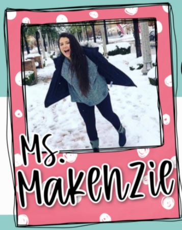
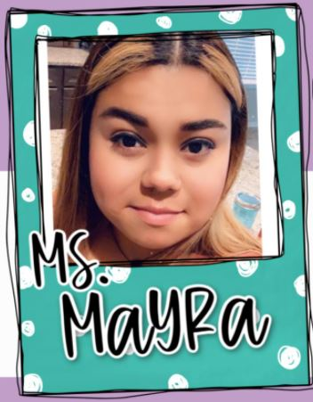

Makenzie Hatch
Ms. Makenzie is a member of Humble Methodist and attended CWM until she was 5 years old. She has been working
at CWM for 3 years. Previously, she only had worked summers, but we are happy to welcome her as a full-time staff
member this year!!

Mayra Bautista
Ms. Mayra has worked at CWM for five amazing years in the nursery. CWM is beyond blessed to have Mayra working
each day with the babies - She is a gift! Mayra has been with her husband for five years and they have two fun
and adorable little kids who also attend CWM! Her favorite book is "Hello Ninja"
↑ Back to Top